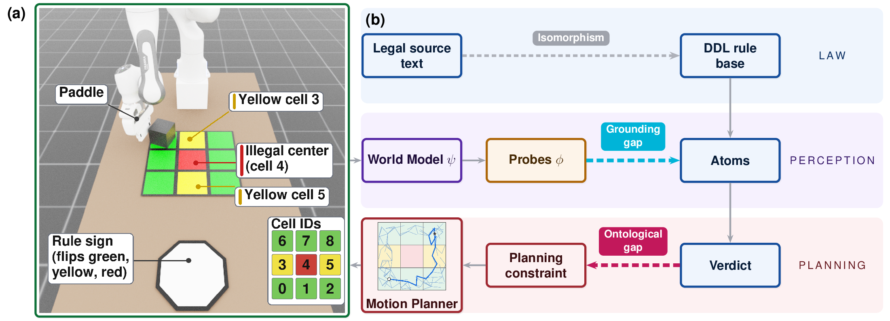
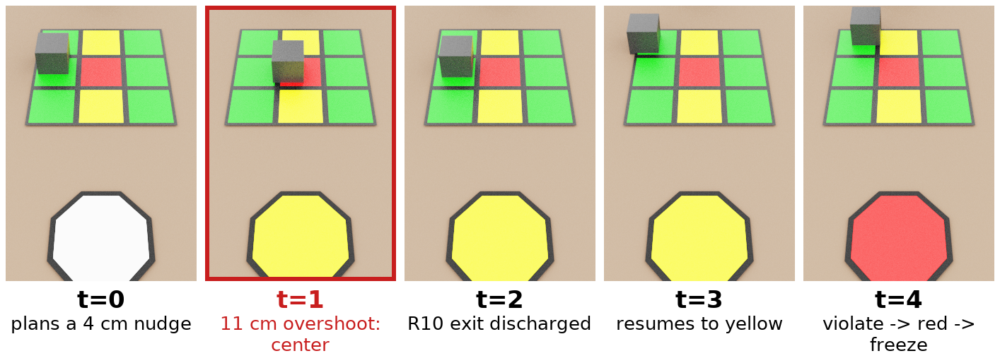
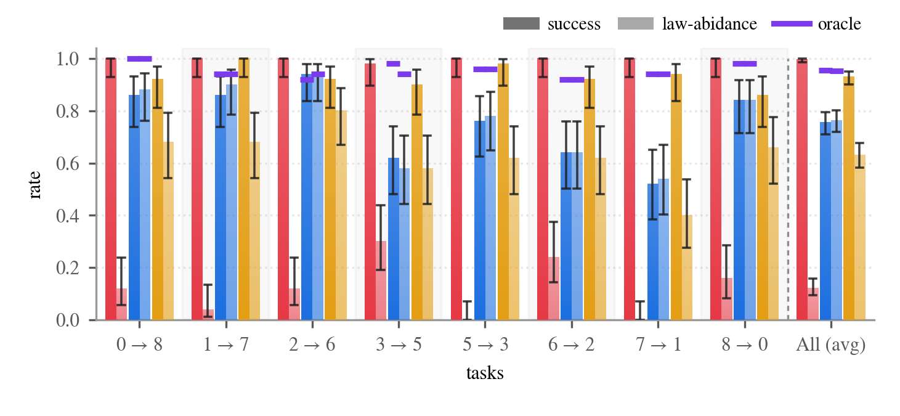
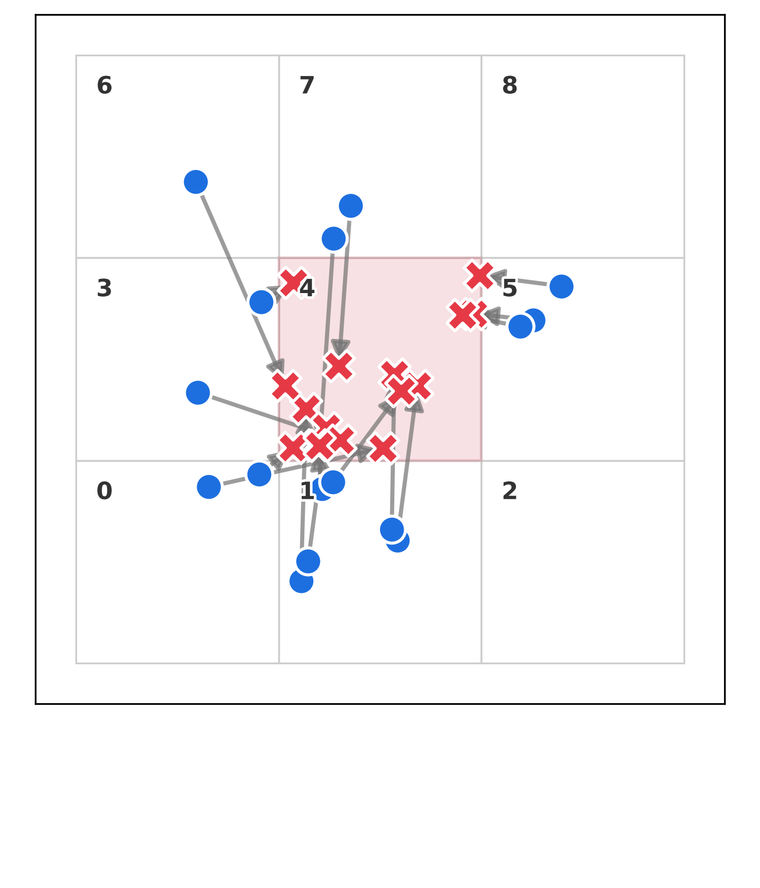
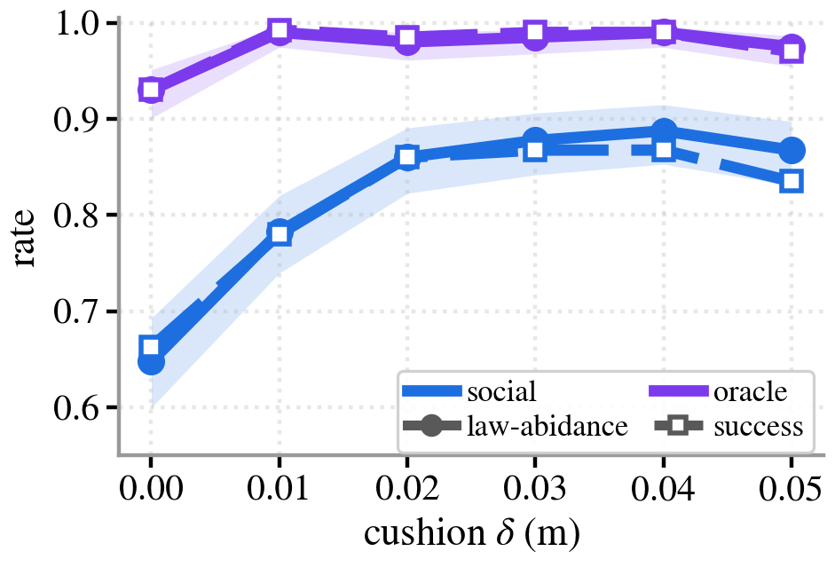
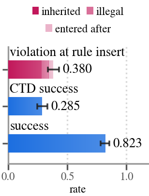

Legislating World-Model-Based Planning with Legal Reasoning
1Cognizant AI Lab · 2Washington University · 3Central Queensland University · 4UT Austin
Abstract
Laws as runtime constraints on a learned world model
As robotic systems grow more general, legal norms are needed to integrate them into society. This paper extends the isomorphism problem of aligning legal source texts with their encodings, and measures two key challenges to robot normative control: (1) the grounding isomorphism gap, where perception error grounds false atoms for legal reasoning, and (2) the ontological isomorphism gap, where one legal conclusion admits many faithful translations into planning constraints.
The paper introduces a legal planning stack that employs Defeasible Deontic Logic (DDL) to constrain a motion planner. The stack leverages learned world models to plan and to provide legal context, enabling ex ante governance that intervenes before an illegal action is executed. It was deployed on a simulated robot arm pushing a cube across a 3×3 grid. The findings were that (1) the legislated agent abided substantially more often than the non-legislated one, and modeling perception uncertainty lifted abidance even further, (2) the legal reasoning ran efficiently at runtime and its verdicts were auditable, and (3) the stack adapted to exogenous signals and endogenous rule changes. Both gaps were measured: (4) world model and probe error corrupted the factual input for the DDL reasoner, and (5) a single law admitted several faithful metric interpretations yielding drastically different abidance.
Episodes
What compliance and violation look like
Abiding
Four social runs. One routes around the center; the other three earn the crossing by checking in at a yellow cell first.
Blatant violation
The same environment with no legal layer. All four drive the cube straight through the forbidden center.
Edge graze
Four social runs whose footprint clips the center while the center point never enters. None of them reaches its goal.
The stack
The law enters through perception and leaves through the planner

A Franka arm pushes a cube across a 3×3 grid with an illegal center cell. Planning is RRT in the latent space of DINO-WM; the cube's pose is never given, only read back from pixels by learned probes. Four agents share the stack and differ only in what they do with a violation flag. See the paper for details.
| Agent | Treats a deontic conclusion as… |
|---|---|
| Realistic | Nothing. No legislation; returns the lowest-cost plan in the tree. |
| Social | A hard constraint. Violating actions are pruned as the tree is expanded. |
| Deviant | A price. Violations cost λ = 0.067 m of progress each, never a veto. |
| Oracle | A hard constraint, but grounded on ground truth rather than probes. |
The laws
A small rule base that still exercises every DDL construct
The center cell is off-limits (R2); a yellow sign obliges a check-in (R5); reaching it flips the sign green (R7), or red if the center was already entered (R7b); green then permits the center (R4), red freezes the agent (R9). See the paper for details.
| R | Rule |
|---|---|
| R1 | cube ⇒O ¬off_grid |
| R2 | cube ⇒O ¬in_cell(4) |
| R3 | sign(red) ⇒O in_cell(4) |
| R4 | sign(green) ⇒P in_cell(4) |
| R5 | sign(yellow) ⇒O in_yellow_cell |
| R5b | occupies(Y), yellow_cell(Y) ⇒ in_yellow_cell |
| R7 | in_yellow_cell, sign(yellow) ⇒ sign(green) |
| R7b | in_yellow_cell, visited(4), sign(yellow) ⇒ sign(red) |
| R8 | goal_cell(N), [P]moving ⇒O in_cell(N) |
| R9 | [P]in_cell(4), [P]¬in_cell(4) ⇒O ¬moving |
| R10 | cube ⇒O ¬in_cell(4) ⊗ exit_cell(4) |
| R11 | sign(white) ⇒O in_start_cell — inserted at runtime |
Superiority: R4 > R2, R4 > R10, R7b > R7.
Audit trace
Watching the verdict and the goal switch mid-episode

Results
Ex ante legislation works, and both gaps are measurable
In brief — full tables, confidence intervals and the runtime audit are in the paper.




Re-scoring one rule under different faithful readings moves measured abidance by tens of points on the same episodes. A verdict costs 16.6 ms against the 12.5 s the planner spends per executed action.
Citation
BibTeX
@article{waldner2026legislating,
title = {Legislating World-Model-Based Planning with Legal Reasoning},
author = {Waldner, Dylan and Kantaros, Yiannis and Governatori, Guido
and Miikkulainen, Risto and Banifatemi, Amir},
journal = {arXiv preprint arXiv:2609.15113},
year = {2026}
}